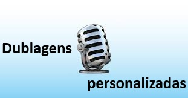
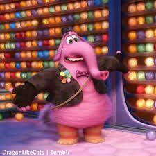
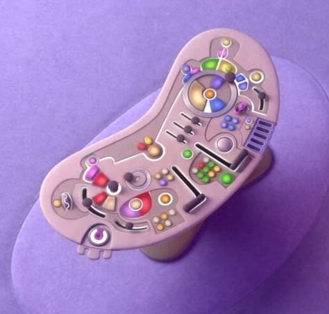
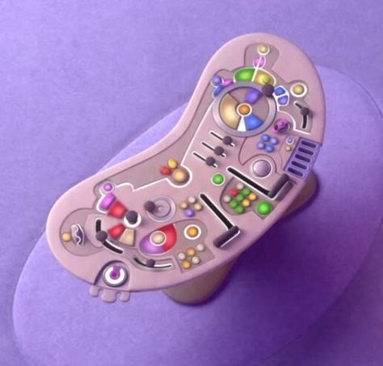

-
Emoções diferentes em outros países
- No Japão (‚õ©Ô∏è), o br√≥colis (ü•¶) foi substitu√≠do por pimentão
verde (ü´ë)...
- A adaptação foi feita para manter a coerência cultural da cena
de "Nojinho".


-
O nome original seria diferente
- Inicialmente, o filme teria o nome provisório de “The Inside
Story” (A História de Dentro).
-
A memória favorita muda de cor
- No início do filme, a memória central da Riley era totalmente
amarela (Alegria).
- No final, ela ganha tons de azul (Tristeza)...
-

- As vozes e piadas foram adaptadas para cada país...
- Algumas expressões foram localizadas para que as crianças de
cada cultura entendessem melhor.
-
As emoções têm formas simbólicas
- üíõ Alegria ‚Äì inspirada em uma estrela

- üíô Tristeza ‚Äì lembra uma gota

- ❤️ Raiva – parece um tijolo/quadrado

- üíú Medo ‚Äì fino e nervoso

- üíö Nojinho ‚Äì br√≥colis estilizado

-
Inicialmente teria 27 emoções
- Durante o desenvolvimento, a Pixar chegou a listar 27 emoções
diferentes...
-
A idade de Riley foi escolhida a dedo
- Ela tem 11 anos, pois essa é uma fase de grandes mudanças
emocionais...
-
Oscar e reconhecimento
- O filme venceu o Oscar de Melhor Animação em 2016.
- Também foi indicado a Melhor Roteiro Original...
-
Consultoria científica real
- Psicólogos como Paul Ekman e Dacher Keltner ajudaram na
construção das emoções...
-
Bing Bong quase foi cortado

- O amigo imaginário Bing Bong quase foi deixado de fora do
roteiro.
- Porém, sua cena de despedida emocionou tanto os roteiristas que
decidiram mantê-lo.
-
A mente como uma cabine de avião
 

- A sala de controle das emoções foi inspirada em painéis de
aviões e naves...
-
As 27 emoções inicialmente cogitadas
- Segundo fontes ligadas à produção, algumas das emoções que
estavam na lista original incluem:
- Alegria, Tristeza, Raiva, Medo, Nojinho, Surpresa, Orgulho,
Confiança, Ansiedade, Nostalgia, Inveja, Tédio, Romance,
Encantamento, Empatia, Interesse, Triunfo, Admiração, Adoração,
Satisfação, Calma, Horror, Temor, Excitação, Desejo,
Estranhamento, Diversão, Dúvida, Simpatia, Apreço visual
- Essas emoções foram consideradas para representar a complexidade
emocional humana...
Por que reduzir para cinco?
- Simplicidade visual e narrativa
- Facilidade de identificação para o público infantil
- Base nas emoções universais da psicologia de Paul Ekman
- Com o crescimento de Riley em *Divertida Mente 2*, algumas
dessas emoções descartadas... ganham espaço.
-
Como as emoções mudam em diferentes
culturas
- O filme originalmente teria mais de 20 emoções...
- Em *Divertida Mente 2*, os adultos não apresentam as novas
emoções que surgem em Riley...
- Os pais da Riley têm um conjunto emocional mais limitado...
- Emoções como o amor foram deixadas de fora ou escondidas...
- Algumas teorias imaginam pares entre emoções...
-
Curiosidade bônus: Cores das emoções
- üíõ Alegria ‚Äì inspirada em uma estrela
- üíô Tristeza ‚Äì lembra uma gota
- ❤️ Raiva – parece um tijolo/quadrado
- üíú Medo ‚Äì fino e nervoso
- üíö Nojinho ‚Äì br√≥colis estilizado